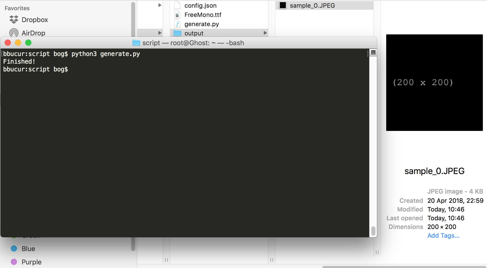

Python Image generating script
A helpful tool for those in need of a large number of different images, with various sizes. Check out the Github page for the code, my blog post for some insights or just read the instructions below.
Download
How to use it
After you download the archive from Github or just the backup script itself, you have to configure the config.json file by hand or you can use the online configurator.
All you have to do next is run python generate.py.
Settings
This is how the sample config file looks like:
{
"settings": {
"total_images": 1,
"output_path": "output",
"filename": "sample_##index",
"zfill": true,
"format": "JPEG",
"quality": 100,
"background_color": "#000000",
"size": {
"width": 200,
"height": 200,
"ratio": 1
},
"text": "(##width x ##height)",
"text_size": 20,
"text_color": "#FFFFFF",
"text_position": "center"
}
}
- total_images refers to the number of images you wish to generate. Has to be an integer.
- output_path refers to the folder where the generated images will be saved. The default value is "output". The folder must exist before running the script.
- filename refers to name structure of the saved image. You can use the dynamic keyword ##index, which will be automatically replaced with the image index (0 for the first image, 1 for the second, and so on). The file extenion will be added by the script, based on the format setting.
- zfill refers to zero-padding the index mentioned above, so you can preserve the alphabetical order. For 100 images, their names will regularly be image_0, image_1, etc. With zfill set to true you will get image_000, image_001, etc. Has to be a boolean.
-
format refers to image format. The possible values are:
- JPEG
- PNG - quality refers to image quality, 0 for the lowest, 100 for the highest.
-
background_color refers to image's background color. The possible values are:
- a hex color (ex. "#000000")
- a list of possible colors from which a random value will be chosen (ex. "#FF0000,#00FF00,#0000FF")
- "random", where a random color will be generated by the script. -
size refers to the image size object. It has three possible cases:
- you specify a width and a height
- you specify a width and a ratio
- you specify a height and a ratio
The ratio can be a float value. For width and height, you can use three possible values:
- an integer value corresponding to a size in pixels (ex. 100)
- an integer interval from which a random value will be chosen for each image (ex. "100-200" for a random value between and including 100 and 200)
- an array of integer values in pixels, from which a random value will be chose for each image (ex. 100,200,300) - text refers to the text written on the image (optional). On top of the "##index" keyword detailed for filename, you can also use here "##width" and "##height", corresponding to the width and height of the image (in pixels).
- text_size refers to the font size in pixels of the text written on the image. Has to be an integer.
-
text_color refers to color of the text written on the image. The possible values are:
- a hex color (ex. "#000000")
- a list of possible colors from which a random value will be chosen (ex. "#FF0000,#00FF00,#0000FF")
- "random", where a random color will be generated by the script.
- "invert", where the script will use the inverted version of the background color, for a guaranteed contrast. -
text_position refers to the position of the text written on the image. The possible values are:
- top
- center
- bottom
Comes with a 10 pixels margin.
Running the script
Open a terminal window and navigate to the location of the generate.py file. Then run python generate.py and watch the magic happen!
